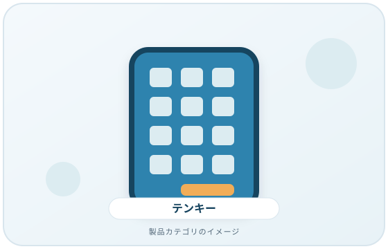
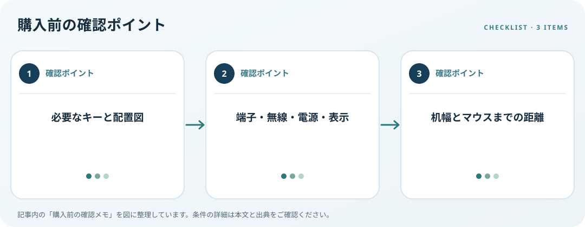

外付けテンキーの必要キー、接続、Num Lock、マウスとの配置を確認します。この記事では仕様の確認順を整理します。
画像・ボタンはAmazonアソシエイトリンクです。適格購入により紹介料を得る場合があります。

Amazon.co.jpで「USB テンキー 外付け」を探す ↗

必要なキーを書き出す
数字入力だけか、Tab・Enter・演算キーも必要かを決めます。キー数が同じでも配置は製品ごとに異なるため、使うアプリで必要なキー位置を図で確認します。メインキーボードとの間で入力切替やショートカットをどう使うかも整理しましょう。
接続方式と表示を確認
USB-A、USB-C、Bluetooth、専用レシーバーなどをPCの空き端子や対応状況に合わせます。ケーブル長、無線の電源、Num Lockの状態表示、複数機器の切替機能は仕様表を確認します。頻繁に移動するなら収納や持ち運び寸法も見ます。
手とマウスの距離を測る
テンキーをキーボードの横に置いた状態で、マウスが遠くなりすぎないか机上で測ります。OSHAは入力機器を無理なく操作できる場所に置く考え方を示しています。製品寸法と自分の机・椅子に合わせ、使わない時に移動できるかも考えます。
購入前の確認メモ
- 必要なキーと配置図
- 端子・無線・電源・表示
- 机幅とマウスまでの距離
この記事は出典の公開情報を購入前の確認項目に整理したもので、特定商品の使用・実測・レビュー・ランキング・価格・在庫の調査は行っていません。購入時には利用機器メーカーの最新仕様をご確認ください。
出典
- Keyboards — OSHA（確認日: 2026-10-10）
- Input accessibility — Microsoft（確認日: 2026-10-10）
- Workstation Evaluation — OSHA（確認日: 2026-10-10）